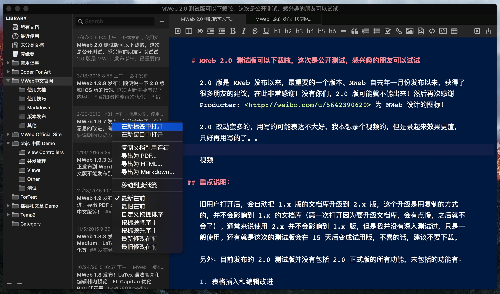

MWeb 2.0.7 版发布！
更新前针对 MAS 上的评论重点说一下：MWeb 是支持直接对本地文件夹操作的，不用导入到文档库！请使用外部模式！请使用外部模式！！请使用外部模式！！! 重要的话讲三次！使用方法是 CMD + E 打开外部模式并把文件夹拖进左侧即可。
重要说明： Mac App Store 版已提交审核，还没正式发布，想必明天应该是能通过。官网版已经可以更新了。
这次的更新主要是修正一些 bug, 详细为：
- 加把 HTML 粘贴为 Markdown 的功能，在菜单： 编辑 - 把 HTML 粘贴为 Markdown。提示：此功能可以快速把网页上的内容保存为 markdown，下面有 gif 演示。
- 加支持打开所有扩展名的文档。
- 加重新加载文档库的功能，菜单：文件 - 重新加载文档库。
- 加：当当前视图模式为仅预览模式时，用 CMD + P 会打印当前预览的结果。
- 正 CMD + Shift + S 复制文件的 bug
- 正预览可能会变空白的问题
- 正在表格编辑中，如果有 LaTex 公式，再编辑时公式会出问题的 bug。
- 它的一些 Bug 修正和性能提高。
把 HTML 粘贴为 Markdown 功能演示：
这个功能默认会把远程的图片保存到本地，如果你不想保存图片，可以使用 CMD + Shift + N 新建文档再用此功能。

MWeb 2.0 版正式发布，￥50 促销一周，一周后将变为 ￥98，所以也算 50% OFF 了！
MWeb 2.0 版为重大升级版，这个版本主要为：
- 文档库支持自定义保存位置（现在可以把文档库保存到网盘来同步了）。偏好设置 - 通用设置 中可以设置
- 文档库和外部模式都增加 Tabs 支持
- 文档库支持 Tags
- 增加工具栏
- 重新设计了文档大纲和文档库的文档属性设置方式
- 改进表格编辑和插入功能，提供了 UI 界面并支持全键盘操作，使用方式：
Ctrl + Shift + T或按工具栏的插入表格按钮。 - UI 有所调整。
这次发布我做了一个介绍视频，基本上把 MWeb 的功能和使用都演示了一下，包括 2.0 版的功能，感兴趣的朋友可以去以下地址看看：
- B 站（bilibili）地址：http://www.bilibili.com/video/av5366059/
- Youtube 地址：https://www.youtube.com/watch?v=85RwOuxthoE
当然，视频也放上官网了。
Product Hunt 上求投票！
这次在 @im61 的帮助下，分享到了 Product Hunt ！网址：https://www.producthunt.com/tech/mweb MWeb 在国外推广非常艰难，目前我仅知道 Product Hunt，所以这次对 MWeb 的发展非常重要！希望各位帮助一下！
继续阅读 →MWeb 2.0 测试版更新汇总
目前更新情况为：7/6 2.0.1 版发布、7/8 2.0.2 版发布、7/9 2.0.3 版发布、7/11 2.0.4 版发布、7/12 2.0.5 版发布。
继续阅读 →MWeb 2.0 测试版可以下载啦，这次是公开测试，感兴趣的朋友可以试试
2.0 版是 MWeb 发布以来，最重要的一个版本。MWeb 自去年一月份发布以来，获得了很多朋友的建议，在此非常感谢！没有你们，2.0 版可能就不能出来！然后再次感谢 Producter: http://weibo.com/u/5642390620 为 MWeb 设计的图标！
2.0 改动蛮多的，用写的可能表达不大好，我本想录个视频的，但是录起来效果更渣，只好再用写的了。。
新版的 MWeb 界面如下，这个版本终于是可以自定义文档库的位置了，可以打开 偏好设置 - 通用设置 里设置文档库的位置。另外也增加了 Tabs 功能，MWeb 的 Tabs 的功能设计得跟 Sublime 相同，就是一个窗口中会有一个可替换的 Tab，用点击第二栏的列表时，会使用这个可替换的 Tab 显示点击的文档。如下图，如果用 右键 - 在新标签中打开 或者双击则会打开一个固定的新 Tab。

MWeb 1.9.8 发布！顺便说一下 2.0 版和 iOS 版的情况
这次更新主要有以下内容：
- 编辑器性能再次优化。
- 编辑器内图片右键功能增加 “彻底删除此图片” 菜单项。
- 拖拽和粘贴图片支持从 Photo、Safari、Chrome 等常用 app 中拖拽和复制的图片。
- 修正外部模式图片设置为绝对路径时，导出 PDF 后图片不显示问题。
- 修正在编辑器中直接点击带“标题”属性的连结时，跳转网址不正确问题。
- 修正编辑&预览视图下 CMD + 1 后没到切换到仅编辑器视图的问题
- Task list 生成的 checkbox 现在变为 disabled 了。
- 一些 Bug 修复。
然后这次最重大的改变是：现在可以在 MAS 外购买 MWeb 了！ 还有就是，现在可以下载 MWeb 付费版来试用了！另外重点说明的是：在购买页面中选中国后，会支持使用支付宝购买！购买网址为：https://sites.fastspring.com/mweb/product/mweb。
关于 MWeb 2.0 版和 iOS 版
iOS 版其实在去年就已经计划了，但是 OS X 版一直在开发中，还没正式完善，所以去年仅仅是在 iOS 上试验一下编辑器的功能，并没有急急着手去做。在这一版发布之后，就要开始做 2.0 版和 iOS 版了。我的独立开发者生涯，差几个月就满两年了，在这过程中，深知优秀的 App 都是要经过时间的沉淀、大量精力和 N 次版本。MWeb 是我的第一个产品，估计也会是最后一个吧，只做一个，才能用有限的精力把它做好。另外，这一版发布后，如无重大 Bug，应该不会发新版本了，直到 2.0 版和 iOS 版发布。